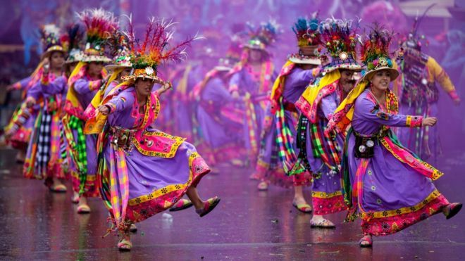
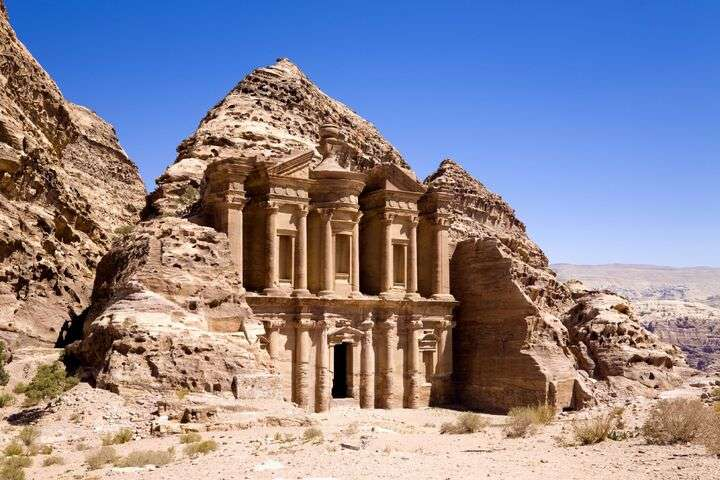

Culturele vakanties
Hier vind je een overzicht van leuke ideeën voor culturele vakanties!
Azië
India
India is een land vol contrasten, waar oude tradities en modern leven naast elkaar bestaan. Je vindt er indrukwekkende tempels, drukke steden en diverse landschappen, van woestijnen tot hoge bergen.
Voor veel reizigers kan India overweldigend zijn door de drukte, armoede en verschillen in leefstijl. Toch maken de cultuur, spiritualiteit en gastvrijheid het tot een unieke ervaring.
Bezienswaardigheden zoals de Taj Mahal, kleurrijke markten en de Himalaya’s trekken mensen van over de hele wereld. De Indiase keuken is enorm gevarieerd en sterk afhankelijk van de regio.

Laos
Laos voelt rustig en ontspannen aan, vooral vergeleken met andere landen in Zuidoost-Azië. Het landschap bestaat uit bergen, rivieren en veel natuur, wat het land ideaal maakt voor reizigers die even willen ontsnappen aan drukte.
Tijdens het reizen merk je dat alles wat langzamer gaat, van vervoer tot service. Respect voor religie en tradities is belangrijk, vooral bij tempelbezoeken.
Luang Prabang, de Mekong-rivier en watervallen zoals Kuang Si laten goed zien hoe natuurlijk en vredig Laos is. Het land heeft geen zee, wat het extra bijzonder maakt in deze regio.

Vietnam
Vietnam is een levendig land met groene rijstvelden, chaotische steden en een lange kustlijn. De cultuur is sterk aanwezig in het dagelijks leven en het eten speelt een grote rol, met verse kruiden en straatkraampjes op elke hoek.
Reizen door Vietnam vraagt soms wat geduld door het drukke verkeer en het warme, vochtige klimaat. Toch zijn de mensen vriendelijk en behulpzaam, wat het reizen een stuk aangenamer maakt.
Hoogtepunten zijn onder andere Halong Bay, de oude stad Hoi An en het bruisende Ho Chi Minh City. Vietnam staat daarnaast bekend om zijn koffie, die vaak sterker en zoeter is dan je gewend bent.

Afrika
Marokko
Marokko heeft een warme sfeer met smalle straatjes, kleurrijke souks en een mix van Arabische, Afrikaanse en Europese invloeden. De cultuur is zichtbaar in architectuur, eten en dagelijkse rituelen.
Bij een bezoek is het belangrijk rekening te houden met lokale normen, vooral wat betreft kleding en gedrag. Afdingen op markten hoort er helemaal bij.
Steden zoals Marrakech en Fez, maar ook de Sahara en het Atlasgebergte, laten de veelzijdigheid van het land goed zien.

Ghana
Ghana staat bekend om zijn vriendelijke bevolking en sterke gemeenschapsgevoel. Muziek, dans en tradities spelen een grote rol in het dagelijks leven.
Reizen door Ghana kan soms uitdagend zijn door het warme klimaat en de infrastructuur, maar de open houding van de mensen maakt veel goed.
Langs de kust vind je historische forten, terwijl het binnenland bestaat uit natuurparken en levendige steden zoals Accra.

Oeganda
Oeganda wordt vaak geprezen om zijn natuur en wildlife. Het landschap is afwisselend, met meren, savannes en dichte bossen.
Tijdens het reizen is het verstandig gebruik te maken van lokale gidsen, vooral in natuurgebieden. De voorzieningen zijn niet overal even ontwikkeld.
Het spotten van gorilla’s, safari’s en een bezoek aan het Victoriameer maken Oeganda tot een bijzondere bestemming.

Zuid- en Midden-Amerika
Peru
Peru heeft een rijke geschiedenis die nog steeds zichtbaar is in oude steden en tradities. Het land combineert hoge bergen, jungle en kustgebieden.
Reizigers moeten rekening houden met hoogteziekte in bergachtige gebieden zoals de Andes. Het klimaat verschilt sterk per regio.
Plaatsen zoals Machu Picchu, Cusco en het Amazonegebied laten zien hoe indrukwekkend Peru is, zowel cultureel als natuurlijk.

Bolivia
Bolivia voelt rauw en authentiek aan, met sterke inheemse invloeden en spectaculaire landschappen. Het land is minder toeristisch, wat het extra bijzonder maakt.
Door de grote hoogte en eenvoudige infrastructuur kan reizen soms vermoeiend zijn. Een rustig tempo is daarom belangrijk.
De zoutvlakte Salar de Uyuni, La Paz en het Titicacameer behoren tot de meest indrukwekkende plekken van het land.
Midden–Oosten
Jordanië
Jordanië staat bekend om zijn historische rijkdom en indrukwekkende woestijnen. De sfeer is rustig en de mensen zijn vaak erg gastvrij.
Bij een bezoek is het belangrijk rekening te houden met conservatieve normen en het warme klimaat. Respect voor cultuur en religie wordt gewaardeerd.
Petra, Wadi Rum en de Dode Zee maken Jordanië tot een unieke reisbestemming.
Armenië en Georgië
Armenië en Georgië liggen op het kruispunt van Europa en Azië en hebben een lange en bewogen geschiedenis. Bergen, kloosters en oude steden bepalen het landschap.
Reizen kan soms uitdagend zijn door bergachtig terrein en beperkt openbaar vervoer, maar dat maakt het avontuur juist bijzonder.
Steden zoals Yerevan en Tbilisi, samen met eeuwenoude kloosters en wijntradities, geven deze landen een eigen en karaktervolle sfeer.